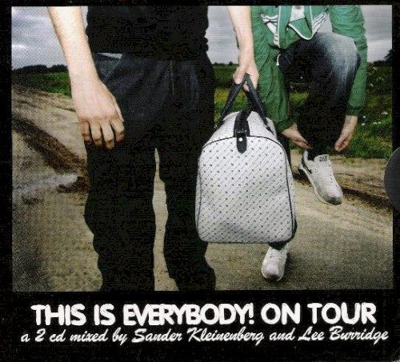

Various Artists - This is Everybody! On Tour, Mixed by Sander Kleinenberg & Lee Burridge


(Renaissance/Stomp)
Dutch DJ/producer Sander Kleinenberg describes his ongoing Everybody project as his chance to “do my thing”, kicking off as a series of mix CDs and evolving into a full-blown tour utilising the latest in cutting-edge clubbing technology. The third instalment since its powerhouse debut in 2003, This is Everybody! On Tour sees Kleinenberg bring Lee Burridge on board to share the mixing duties and add his own glitchy tech-house mentality to the release. A bold move perhaps, but unfortunately the latest in the Everybody series just doesn’t measure up to the quality of previous releases.
Lee Burridge is the first cab off the rank, and he delivers a quirky left-of-centre mix that is far from your typical pumping club set, but makes for a great laidback listen nonetheless. A glitchy 80’s sound is prevalent on the CD, with plenty of squelchy electro and twisted whistles and squeaks, but it would be unfair to lump Burridge in with the current movement as he’s been pushing these sort of acid-heavy sounds for years. While it takes a while to get moving, Burridge really begins to bang it out in the second half with contributions from the likes of Dirk Technic and Trentemoller. But what it holds in quirky appeal, it lacks in fun – it’s all a bit too cold, distant and alienating to really get you excited.
The guest DJ may be a fresh addition to the series, but Sander Kleinberg’s mix is what most Everybody fans will be looking forward to – the Dutch maestro is famous for his own chunky take on progressive, with a long history in the scene but moving even further in recent times towards the upfront end of the spectrum. What surprises most is how much he has embraced the electro sound; kicking off with the Papa mix of Pony’s Our House and moving straight onto a reinterpretation of Mylo’s Muscle Car, it seems Kleinenberg is just as susceptible to the charms of the 80’s revival as the other big house jocks like Lawler and Sanchez.
But what begins as a subdued shot of 80’s quirkiness quickly morphs into some phat, stomping electro beats. His traditional progressive mentality still underpins the mix, but it’s defined more than anything else by a funky electro groove, jackin’ house beats and MASSIVE basslines – selections from Jon Gurd and Bodyrocks really hit the spot. He takes things in a slightly more cerebral direction with Groovefire’s Earthquake, but this is still powerful, upfront and driving stuff. But all is not well in the land of Everybody: in spite of the quality inclusions, there are just as many tracks that lack an extra special something. It makes for an enjoyable enough listen but it’s far from a smashing release, making it, for the first time for a Sander Kleinenberg CD, fairly uninspiring.
Considering the number of quality progressive compilations released in the last 12 months, from old hands like Howells and Warren to the nubreed crew of Masiello and Zabiela, This is Everybody! On Tour will have trouble standing out from the pack. And stacked alongside the superbly slick mashup of house, progressive and electro that was Kleinenberg’s original Everybody, it doesn’t look so crash hot. Burridge’s release jumps off the deep end into techy-electro quirkiness, while Kleinenberg’s mix is solid but far from spectacular, skimming across the styles but failing to hold it all together as you’d expect. All in all, there’s just a little bit too much electro: adopting new influences is one thing, but completely giving over your sound to the latest ‘hawt’ musical trend is another. Here’s hoping 2006 will see a return to form for the Everybody series.